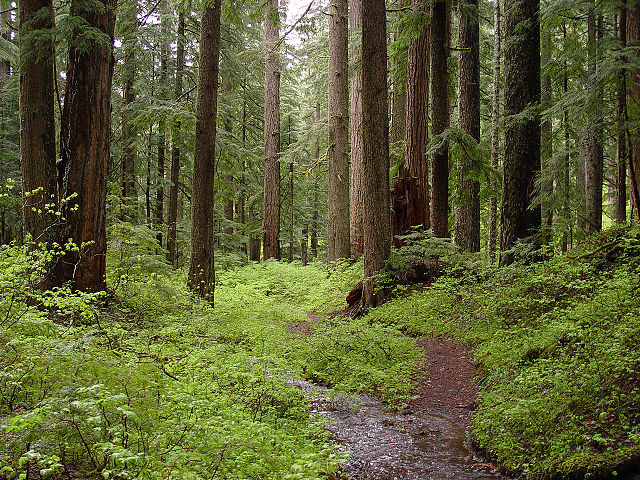

Nature
An ecosystem (also called as environment) is a natural unit consisting of all plants, animals and micro-organisms (biotic factors) in an area functioning together with all of the non-living physical (abiotic) factors of the environment.[30] Central to the ecosystem concept is the idea that living organisms are continually engaged in a highly interrelated set of relationships with every other element constituting the environment in which they exist. Eugene Odum, one of the founders of the science of ecology, stated: "Any unit that includes all of the organisms (i.e.: the "community") in a given area interacting with the physical environment so that a flow of energy leads to clearly defined trophic structure, biotic diversity, and material cycles (i.e.: exchange of materials between living and nonliving parts) within the system is an ecosystem."[31] Old-growth forest and a creek on Larch Mountain, in the U.S. state of Oregon. The human ecosystem concept is then grounded in the deconstruction of the human/nature dichotomy, and the emergent premise that all species are ecologically integrated with each other, as well as with the abiotic constituents of their biotope. A greater number or variety of species or biological diversity of an ecosystem may contribute to greater resilience of an ecosystem, because there are more species present at a location to respond to change and thus "absorb" or reduce its effects. This reduces the effect before the ecosystem's structure is fundamentally changed to a different state. This is not universally the case and there is no proven relationship between the species diversity of an ecosystem and its ability to provide goods and services on a sustainable level. The term ecosystem can also pertain to human-made environments, such as human ecosystems and human-influenced ecosystems, and can describe any situation where there is relationship between living organisms and their environment. Fewer areas on the surface of the earth today exist free from human contact, although some genuine wilderness areas continue to exist without any forms of human intervention.



Old-growth forest and a creek on Larch Mountain
random article
recent changes
current events
donate!
Blogs
Ecosystems
Atmosphere, climate, and weather
Human interrelationship
Water on earth
Historical perspective
Wilderness
Rivers
Streams
Microbes
Geology
Lakes
Ponds
Natural reserve